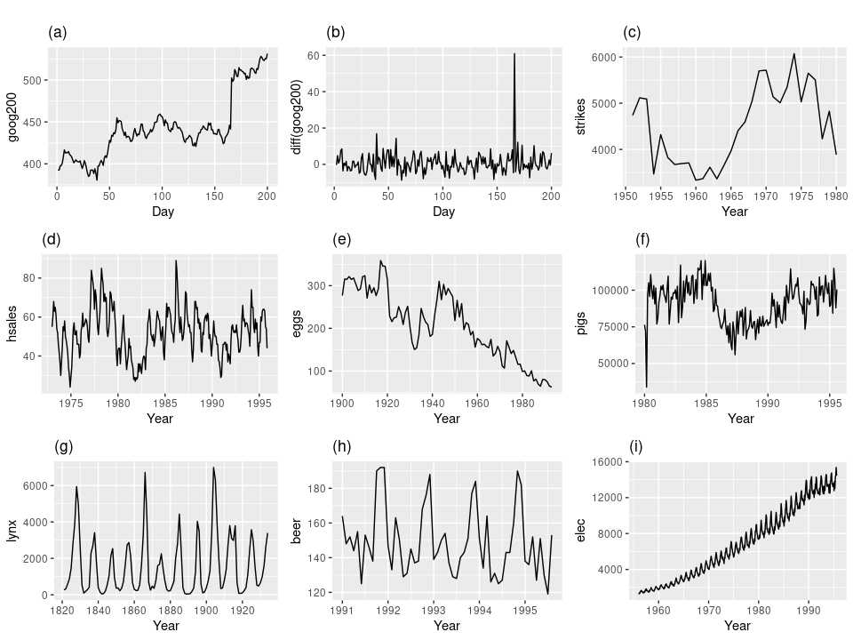

Statsmodels: Temporal Analysis
Contents
Statsmodels: Temporal Analysis#
import warnings
import numpy as np
import pandas as pd
import matplotlib.pyplot as plt
import seaborn as sns
import pmdarima as pm
import ruptures as rpt
from statsmodels.tsa.stattools import adfuller
from statsmodels.graphics.tsaplots import plot_acf, plot_pacf
from statsmodels.tsa.seasonal import seasonal_decompose
from sktime.datasets import load_airline, load_macroeconomic
from pmdarima.arima import ndiffs
from scipy.signal import argrelmin, argrelmax, find_peaks
plt.style.use(['seaborn', 'seaborn-whitegrid'])
warnings.filterwarnings('ignore')
%config InlineBackend.figure_format = 'retina'
1. Time series manipulation#
1.1. Datetime manipulation#
Standard format#
The complete datetime has the data type of datetime64 and the format can be either YYYY-MM-DD or YYYY-MM-DD hh:mm:ss. This column can be used to detach year, quarter, month,… and the cyclic fields.
To quickly create a date or time column, use the pd.date_range() function with the freq parameter indicating the frequency of the date. The freq parameter support a number of aliases.
seqMS = pd.date_range('2020-01-01', '2020-12-31', freq='MS')[:5]
seq3h = pd.date_range('2020-01-01', '2020-12-31', freq='3h')[:5]
pd.DataFrame({
'month_start': seqMS,
'time_3h': seq3h,
})
| month_start | time_3h | |
|---|---|---|
| 0 | 2020-01-01 | 2020-01-01 00:00:00 |
| 1 | 2020-02-01 | 2020-01-01 03:00:00 |
| 2 | 2020-03-01 | 2020-01-01 06:00:00 |
| 3 | 2020-04-01 | 2020-01-01 09:00:00 |
| 4 | 2020-05-01 | 2020-01-01 12:00:00 |
Useful techniques#
dfDate = pd.DataFrame({
'day': [1, 2, 3],
'month': [1, 1, 1],
'year': [2020, 2020, 2020]
})
# combine three columns "day", "month" and "year"
dfDate.assign(date=pd.to_datetime(dfDate[['day', 'month', 'year']]))
| day | month | year | date | |
|---|---|---|---|---|
| 0 | 1 | 1 | 2020 | 2020-01-01 |
| 1 | 2 | 1 | 2020 | 2020-01-02 |
| 2 | 3 | 1 | 2020 | 2020-01-03 |
sequence = pd.date_range('2020-01-01', '2020-12-31', freq='17h 36t 43s')
dfDate = pd.DataFrame({'time': sequence}).head()
dfDate.assign(date=dfDate.time.dt.date)
| time | date | |
|---|---|---|
| 0 | 2020-01-01 00:00:00 | 2020-01-01 |
| 1 | 2020-01-01 17:36:43 | 2020-01-01 |
| 2 | 2020-01-02 11:13:26 | 2020-01-02 |
| 3 | 2020-01-03 04:50:09 | 2020-01-03 |
| 4 | 2020-01-03 22:26:52 | 2020-01-03 |
Formatting date#
dfDate = pd.DataFrame({'date': pd.date_range('2020-01-01', '2020-12-31', freq='25D')})
dfDate.assign(date_print=dfDate.date.dt.strftime('%d/%m/%y')).head()
| date | date_print | |
|---|---|---|
| 0 | 2020-01-01 | 01/01/20 |
| 1 | 2020-01-26 | 26/01/20 |
| 2 | 2020-02-20 | 20/02/20 |
| 3 | 2020-03-16 | 16/03/20 |
| 4 | 2020-04-10 | 10/04/20 |
Extracting date part#
dfDate = pd.DataFrame({'date': pd.date_range('2020-01-01', '2020-12-31', freq='100000 min')})
dfDate\
.assign(year=dfDate.date.dt.to_period('Y').astype(str))\
.assign(quarter=dfDate.date.dt.to_period('Q').astype(str).str.replace('Q', '-'))\
.assign(month=dfDate.date.dt.to_period('M').astype(str))\
.assign(week=dfDate.date.dt.strftime('%Y-%U'))
| date | year | quarter | month | week | |
|---|---|---|---|---|---|
| 0 | 2020-01-01 00:00:00 | 2020 | 2020-1 | 2020-01 | 2020-00 |
| 1 | 2020-03-10 10:40:00 | 2020 | 2020-1 | 2020-03 | 2020-10 |
| 2 | 2020-05-18 21:20:00 | 2020 | 2020-2 | 2020-05 | 2020-20 |
| 3 | 2020-07-27 08:00:00 | 2020 | 2020-3 | 2020-07 | 2020-30 |
| 4 | 2020-10-04 18:40:00 | 2020 | 2020-4 | 2020-10 | 2020-40 |
| 5 | 2020-12-13 05:20:00 | 2020 | 2020-4 | 2020-12 | 2020-50 |
Extracting cyclic attributes#
dfDate = pd.DataFrame({'date': pd.date_range('2020-01-01', '2020-12-31', freq='100000 min')})
dfDate\
.assign(weekday=dfDate.date.dt.day_name())\
.assign(day_of_year=dfDate.date.dt.dayofyear)\
.assign(month_of_year=dfDate.date.dt.month)\
.assign(quarter_of_year=dfDate.date.dt.quarter)
| date | weekday | day_of_year | month_of_year | quarter_of_year | |
|---|---|---|---|---|---|
| 0 | 2020-01-01 00:00:00 | Wednesday | 1 | 1 | 1 |
| 1 | 2020-03-10 10:40:00 | Tuesday | 70 | 3 | 1 |
| 2 | 2020-05-18 21:20:00 | Monday | 139 | 5 | 2 |
| 3 | 2020-07-27 08:00:00 | Monday | 209 | 7 | 3 |
| 4 | 2020-10-04 18:40:00 | Sunday | 278 | 10 | 4 |
| 5 | 2020-12-13 05:20:00 | Sunday | 348 | 12 | 4 |
Rounding date#
The freq parameter of the Series.dt.round() method uses the same aliases mentioned earlier.
dfDate = pd.DataFrame({'date': pd.date_range('2020-01-01', '2020-12-31', freq='100000 min')})
dfDate.assign(date_trunc=dfDate.date.dt.round(freq='h'))
| date | date_trunc | |
|---|---|---|
| 0 | 2020-01-01 00:00:00 | 2020-01-01 00:00:00 |
| 1 | 2020-03-10 10:40:00 | 2020-03-10 11:00:00 |
| 2 | 2020-05-18 21:20:00 | 2020-05-18 21:00:00 |
| 3 | 2020-07-27 08:00:00 | 2020-07-27 08:00:00 |
| 4 | 2020-10-04 18:40:00 | 2020-10-04 19:00:00 |
| 5 | 2020-12-13 05:20:00 | 2020-12-13 05:00:00 |
However, the Series.dt.round() method only works with fixed frequencies such as hour, minute, second. For rounding to date or month, use the Series.dt.to_period() method.
dfDate = pd.DataFrame({'date': pd.date_range('2020-01-01', '2020-12-31', freq='100000 min')})
dfDate.assign(date_trunc=dfDate.date.dt.to_period('M').dt.to_timestamp())
| date | date_trunc | |
|---|---|---|
| 0 | 2020-01-01 00:00:00 | 2020-01-01 |
| 1 | 2020-03-10 10:40:00 | 2020-03-01 |
| 2 | 2020-05-18 21:20:00 | 2020-05-01 |
| 3 | 2020-07-27 08:00:00 | 2020-07-01 |
| 4 | 2020-10-04 18:40:00 | 2020-10-01 |
| 5 | 2020-12-13 05:20:00 | 2020-12-01 |
Timedelta#
dfDelta = pd.DataFrame({
'date1': pd.date_range('2020-01-01', '2020-01-31', freq='3D'),
'date2': pd.date_range('2020-01-02', '2020-03-15', freq='W')
})
dfDelta['timedelta'] = dfDelta.date2 - dfDelta.date1
dfDelta['date3'] = dfDelta.date1 + pd.Timedelta('15 days')
dfDelta
| date1 | date2 | timedelta | date3 | |
|---|---|---|---|---|
| 0 | 2020-01-01 | 2020-01-05 | 4 days | 2020-01-16 |
| 1 | 2020-01-04 | 2020-01-12 | 8 days | 2020-01-19 |
| 2 | 2020-01-07 | 2020-01-19 | 12 days | 2020-01-22 |
| 3 | 2020-01-10 | 2020-01-26 | 16 days | 2020-01-25 |
| 4 | 2020-01-13 | 2020-02-02 | 20 days | 2020-01-28 |
| 5 | 2020-01-16 | 2020-02-09 | 24 days | 2020-01-31 |
| 6 | 2020-01-19 | 2020-02-16 | 28 days | 2020-02-03 |
| 7 | 2020-01-22 | 2020-02-23 | 32 days | 2020-02-06 |
| 8 | 2020-01-25 | 2020-03-01 | 36 days | 2020-02-09 |
| 9 | 2020-01-28 | 2020-03-08 | 40 days | 2020-02-12 |
| 10 | 2020-01-31 | 2020-03-15 | 44 days | 2020-02-15 |
1.2. Time series filling#
A time series may have no existing blank value, however, it doesn’t mean that date column is completed. A completed time series requires all data points to be equally spaced. In other words, the date or time frequency should be a constant across the dataset. Interpolation (the process of inferring new values from given ones) is a great technique filling missing time series.
dfPrice = pd.DataFrame({
'date': pd.to_datetime([
'2020-01-01', '2020-01-03', '2020-01-04', '2020-01-05',
'2020-01-06', '2020-01-07', '2020-01-09', '2020-01-10'
]),
'price': [110, 113, 112, 115, 118, 120, 118, 116]
})
Unhiding missing data#
dfPrice = dfPrice.set_index('date').asfreq('d').reset_index()
dfPrice
| date | price | |
|---|---|---|
| 0 | 2020-01-01 | 110.0 |
| 1 | 2020-01-02 | NaN |
| 2 | 2020-01-03 | 113.0 |
| 3 | 2020-01-04 | 112.0 |
| 4 | 2020-01-05 | 115.0 |
| 5 | 2020-01-06 | 118.0 |
| 6 | 2020-01-07 | 120.0 |
| 7 | 2020-01-08 | NaN |
| 8 | 2020-01-09 | 118.0 |
| 9 | 2020-01-10 | 116.0 |
Neighbor filling#
Two approaches:
Foward filling: \(y_t\leftarrow y_{t-1}\)
Backward filling: \(y_t\leftarrow y_{t+1}\)
forward = dfPrice.price.fillna(method='ffill')
backward = dfPrice.price.fillna(method='bfill')
dfPrice.assign(forward=forward, backward=backward)
| date | price | forward | backward | |
|---|---|---|---|---|
| 0 | 2020-01-01 | 110.0 | 110.0 | 110.0 |
| 1 | 2020-01-02 | NaN | 110.0 | 113.0 |
| 2 | 2020-01-03 | 113.0 | 113.0 | 113.0 |
| 3 | 2020-01-04 | 112.0 | 112.0 | 112.0 |
| 4 | 2020-01-05 | 115.0 | 115.0 | 115.0 |
| 5 | 2020-01-06 | 118.0 | 118.0 | 118.0 |
| 6 | 2020-01-07 | 120.0 | 120.0 | 120.0 |
| 7 | 2020-01-08 | NaN | 120.0 | 118.0 |
| 8 | 2020-01-09 | 118.0 | 118.0 | 118.0 |
| 9 | 2020-01-10 | 116.0 | 116.0 | 116.0 |
Linear interpolating#
This is a family of interpolation, where the simplest strategy is:
filled_values = dfPrice.price.interpolate(method='linear')
dfPrice.assign(price=filled_values)
| date | price | |
|---|---|---|
| 0 | 2020-01-01 | 110.0 |
| 1 | 2020-01-02 | 111.5 |
| 2 | 2020-01-03 | 113.0 |
| 3 | 2020-01-04 | 112.0 |
| 4 | 2020-01-05 | 115.0 |
| 5 | 2020-01-06 | 118.0 |
| 6 | 2020-01-07 | 120.0 |
| 7 | 2020-01-08 | 119.0 |
| 8 | 2020-01-09 | 118.0 |
| 9 | 2020-01-10 | 116.0 |
1.3. Time series calculation#
Cumulative sum#
Cumulative sum is the discrete version of antiderivative, the transformed series \(\mathbf{y}'\) satisfies:
dfPurchase = pd.DataFrame({
'date': pd.date_range(start='1/1/2000', periods=12),
'quantity': [10, 13, 11, 12, 8, 9, 9, 11, 10, 11, 13, 14]
})
dfPurchase['quantity_cumulative'] = dfPurchase.quantity.cumsum()
dfPurchase
| date | quantity | quantity_cumulative | |
|---|---|---|---|
| 0 | 2000-01-01 | 10 | 10 |
| 1 | 2000-01-02 | 13 | 23 |
| 2 | 2000-01-03 | 11 | 34 |
| 3 | 2000-01-04 | 12 | 46 |
| 4 | 2000-01-05 | 8 | 54 |
| 5 | 2000-01-06 | 9 | 63 |
| 6 | 2000-01-07 | 9 | 72 |
| 7 | 2000-01-08 | 11 | 83 |
| 8 | 2000-01-09 | 10 | 93 |
| 9 | 2000-01-10 | 11 | 104 |
| 10 | 2000-01-11 | 13 | 117 |
| 11 | 2000-01-12 | 14 | 131 |
Differencing#
Differencing is the discrete version of derivative, in which the transformed series \(\mathbf{y}'\) is given by:
dfPurchase = pd.DataFrame({
'date': pd.date_range(start='1/1/2000', periods=12),
'quantity': [10, 13, 11, 12, 8, 9, 9, 11, 10, 11, 13, 14]
})
dfPurchase['quantity_difference'] = dfPurchase.quantity.diff(periods=2)
dfPurchase.head(10)
| date | quantity | quantity_difference | |
|---|---|---|---|
| 0 | 2000-01-01 | 10 | NaN |
| 1 | 2000-01-02 | 13 | NaN |
| 2 | 2000-01-03 | 11 | 1.0 |
| 3 | 2000-01-04 | 12 | -1.0 |
| 4 | 2000-01-05 | 8 | -3.0 |
| 5 | 2000-01-06 | 9 | -3.0 |
| 6 | 2000-01-07 | 9 | 1.0 |
| 7 | 2000-01-08 | 11 | 2.0 |
| 8 | 2000-01-09 | 10 | 1.0 |
| 9 | 2000-01-10 | 11 | 0.0 |
Moving average#
Given a series (which has \(N\) observations), moving average or rolling mean calculate the average of each pre-selected size window. A window of size \(K\) (which implies the order of moving average) means \(K\) consecutive values is taken into calculating the mean. Rolling mean is used on time series data to smooth the short-term fluctuations and highlight long-term trends and cycles. Some examples of commonly used values of \(K\):
For a date series, \(K=7\) (weekly) or \(K=30\) (monthly).
For a month series, \(K=4\) (quarterly) or \(K=12\) (annual).
dfRate = pd.read_csv('../data/exchange_rate.csv')
dfRate['rate_smooth'] = dfRate.rate.rolling(window=7, center=True).mean()
dfRate.head(10)
| date | rate | rate_smooth | |
|---|---|---|---|
| 0 | 2020-02-28 | 23241.0 | NaN |
| 1 | 2020-02-27 | 23241.5 | NaN |
| 2 | 2020-02-26 | 23241.0 | NaN |
| 3 | 2020-02-25 | 23271.0 | 23246.285714 |
| 4 | 2020-02-24 | 23248.5 | 23244.428571 |
| 5 | 2020-02-23 | 23243.5 | 23244.714286 |
| 6 | 2020-02-22 | 23237.5 | 23243.071429 |
| 7 | 2020-02-21 | 23228.0 | 23239.500000 |
| 8 | 2020-02-20 | 23243.5 | 23238.285714 |
| 9 | 2020-02-19 | 23229.5 | 23239.928571 |
Notice that there will be \(N-K+1\) rolling mean points and \(K-1\) null values. Therefore, if \(K\) is even, then the rolling mean cannot be centered. To avoid this problem, calculate the rolling mean once again with the order of 2.
dfRate = pd.read_csv('../data/exchange_rate.csv')
rate = dfRate.rate
ma6 = rate.rolling(window=6, center=True).mean()
ma6x2 = ma6.rolling(window=2).mean().shift(-1)
dfRate['rate_smooth'] = ma6x2
dfRate.head(10)
| date | rate | rate_smooth | |
|---|---|---|---|
| 0 | 2020-02-28 | 23241.0 | NaN |
| 1 | 2020-02-27 | 23241.5 | NaN |
| 2 | 2020-02-26 | 23241.0 | NaN |
| 3 | 2020-02-25 | 23271.0 | 23247.458333 |
| 4 | 2020-02-24 | 23248.5 | 23246.041667 |
| 5 | 2020-02-23 | 23243.5 | 23245.125000 |
| 6 | 2020-02-22 | 23237.5 | 23241.875000 |
| 7 | 2020-02-21 | 23228.0 | 23238.208333 |
| 8 | 2020-02-20 | 23243.5 | 23237.708333 |
| 9 | 2020-02-19 | 23229.5 | 23238.875000 |
Growth rate#
The formula for growth rate is given by:
dfCpi = pd.DataFrame({
'quarter': [f'{year} Q{quarter}' for year in range(2017,2020) for quarter in range(1,5)],
'cost': [111.63, 112.23, 112.68, 113.10, 114.10, 115.28, 115.66, 115.59, 115.98, 117.37, 117.69, 117.94]
})
dfCpi['growth_over_last_period'] = dfCpi.cost.pct_change().map('{:.2%}'.format)
dfCpi['growth_over_same_period_last_year'] = dfCpi.cost.pct_change(periods=4).map('{:.2%}'.format)
dfCpi
| quarter | cost | growth_over_last_period | growth_over_same_period_last_year | |
|---|---|---|---|---|
| 0 | 2017 Q1 | 111.63 | nan% | nan% |
| 1 | 2017 Q2 | 112.23 | 0.54% | nan% |
| 2 | 2017 Q3 | 112.68 | 0.40% | nan% |
| 3 | 2017 Q4 | 113.10 | 0.37% | nan% |
| 4 | 2018 Q1 | 114.10 | 0.88% | 2.21% |
| 5 | 2018 Q2 | 115.28 | 1.03% | 2.72% |
| 6 | 2018 Q3 | 115.66 | 0.33% | 2.64% |
| 7 | 2018 Q4 | 115.59 | -0.06% | 2.20% |
| 8 | 2019 Q1 | 115.98 | 0.34% | 1.65% |
| 9 | 2019 Q2 | 117.37 | 1.20% | 1.81% |
| 10 | 2019 Q3 | 117.69 | 0.27% | 1.76% |
| 11 | 2019 Q4 | 117.94 | 0.21% | 2.03% |
2. Time series analysis#
In this section, we discuss possible characteristics that can be observed from a time series:
Trend, the long-term change of data (increasing or decreasing) without looking at small fluctuations.
Seasonality, the pattern that repeats after a specific period.
Cyclic, very much like seasonality but the length of each cycle is not fixed.
2.1. Notation#
Time series notation#
It’s important to introduce time series notations:
\(\mathbf{y}=(y_1,y_2,\dots,y_t,\dots,y_T)\) represents the entire series
\(y_t\) (for \(t=1,2,\dots,T\)) represents an observation, \(t\) represents any observed time step
\(\hat{y}_{T+h}\) (for \(h=1,2,\dots,\infty\)) is an unknown future value which is going to be forecasted, \(h\) is the forecasting horizon
\(\hat{y}_{T+h|T}\) is the forecast value \(\hat{y}_{T+h}\) taking into account all observations up to time \(T\)
Backshift notation#
Now we have walked through all important time series transformations: shifting, differencing and summing, let’s introduce the backshift notation \(B\), an operator that shifts our series 1 step backward. We define \(B(\mathbf{y})=(\emptyset,y_1,y_2,\dots,y_{t-1},\dots,y_{T-1})\). We are going to use \(B\) to describe different transformations of a simple series \(\mathbf{y}=(10,12,15,16,20)\).
Shifting
By definition, \(B(\mathbf{y})=(\emptyset,10,12,15,16)\)
\(B^2(\mathbf{y})=B(B(\mathbf{y}))=(\emptyset,\emptyset,10,12,15)\) represents the 2-step lagged series
\(B^k(\mathbf{y})\) represents a \(k\)-step lagged series
Differencing
\((1-B)(\mathbf{y})=\mathbf{y}-B(\mathbf{y})=(\emptyset,2,3,1,4)\) represents the 1-order differenced series
\((1-B)^2(\mathbf{y})=(\mathbf{y}-B(\mathbf{y}))-B(\mathbf{y}-B(\mathbf{y}))=(\emptyset,\emptyset,1,-2,3)\) represents the 2-order differenced series
\((1-B)^k(\mathbf{y})\) represents a \(k\)-order differenced series
Running total
Denotes \(\mathbf{z}=(10,22,37,53,73)\) the cumulative sum of \(\mathbf{y}\), then \((1-B)(\mathbf{z})=(\emptyset,12,15,16,20)=\mathbf{y}\)
Rewriting the above equation gives us \((1-B)^{-1}(\mathbf{y})\) the representation of cumulative sum, can also be thought as the inverse of differencing
2.2. Auto correlation#
When identifying possible relationship between historical data and the current moment, there are two useful functions, each is plotted in a lollipop chart:
ACF (Auto-Correlation Function). It plots the Pearson’s correlation coefficients \(\rho_1,\rho_2,\dots\) of a series \(\mathbf{y}\) against each of its lagged versions. That is to say, \(\rho_1\) measures how \(B(\mathbf{y})\) affects \(\mathbf{y}\). For \(\rho_2\), it actually measures the total effect of both \(B^2(\mathbf{y})\) and \(B(\mathbf{y})\) on \(\mathbf{y}\), since \(B^2(\mathbf{y})\) and \(B(\mathbf{y})\) are also correlated. This explains why the ACF chart is usually smooth.
PACF (Partial ACF). It plots the coefficients \(\beta_1,\beta_2,\dots\) of the OLS regression function \(\mathbf{y}=\beta_0+\beta_1B(\mathbf{y})+\beta_2B^2(\mathbf{y})+\dots\) PACF describes the direct effect \(\beta_k\) made by previous data \(B^k(\mathbf{y})\), since the later effects has been captured by the corresponding coefficients \((\beta_1,\beta_2,\dots,\beta_{k-1})\). This overcomes the cumulative effect in ACF.
Both ACF and PACF include a \(95\%\) confidence band indicating the correlation coefficient is not significant if it falls into that band.
def plot_time_series(series):
mosaic = [
['ts', 'ts' ],
['acf', 'pacf']
]
fig, ax = plt.subplot_mosaic(mosaic, figsize=(10, 6), constrained_layout=True)
series.plot(ax=ax['ts'], title='Original series')
plot_acf(series, ax=ax['acf'])
plot_pacf(series, ax=ax['pacf'])
plt.show()
In the next part, we are plotting the time series plot along with ACF and PACF for some different series. They help us finding possible trends or seasonality in the data.
dfQty = pd.read_csv('../data/purchase_quantity.csv', index_col='date')
dfQty.index = dfQty.index.astype('datetime64[ns]').to_period('D')
# dfQty = dfQty.asfreq('D')
plot_time_series(dfQty.quantity)
{kind=link}
dfEco = load_macroeconomic()
plot_time_series(dfEco.realgdp)
{kind=link}
{kind=link}
2.3. Seasonal decomposition#
Time series decompostion is a statistical technique that factorizes data into three components: trend, residual and noise. There are two approaches to achieve this, using an additive model or a multiplicative model, where the original data equals to the sum or the product of its componennts.
dfQuantity = pd.read_csv('../data/purchase_quantity.csv')
dfQuantity = dfQuantity.assign(date=dfQuantity.date.astype('datetime64'))
dfQuantity['quantity'] = dfQuantity.quantity.fillna(1e-6) + 1e-6
dfQuantity.head()
| date | quantity | |
|---|---|---|
| 0 | 2019-10-28 | 379.490001 |
| 1 | 2019-10-29 | 669.510001 |
| 2 | 2019-10-30 | 337.170001 |
| 3 | 2019-10-31 | 603.740001 |
| 4 | 2019-01-11 | 189.820001 |
df = dfQuantity.copy()
df = df.set_index('date')
decomposer = seasonal_decompose(df, model='additive', period=7)
decomposer.plot()
plt.show()
{kind=link}
decomposer.seasonal.head(7)
date
2019-10-28 29.471737
2019-10-29 13.227030
2019-10-30 -8.377718
2019-10-31 21.559084
2019-11-01 13.299370
2019-11-02 4.106962
2019-11-03 -73.286467
Name: seasonal, dtype: float64
2.4. Stationarity#
Stationarity refers to a time series whose characteristics do not depends on which time period it is observed. If a time series violates one of these conditions, it is considered non-stationary:
Constant mean at every timeframe
Constant variance at every timeframe
No seasonality
To check whether a time series is stationary, we can look at its line chart. Let’s plot some examples:
{kind=link}
Series (d), (h), (i) have seasonality
Series (a), ©, (e), (f), (i) have trends, thus their means at different periods are not constants
Series (i) has increasing variance over time
Ruling out all violated series above leaves only (b) and (g) stationary
Dickey-Fuller test#
Instead of looking at charts, Agumented Dickey-Fuller test can be used to decide if a series is stationary. The hypotheses:
\(H_0\): data is non-stationary
\(H_1\): data is stationary
The decision making process is: if either p-value < significance level or test statistic < critical value, we reject \(H_0\) and conclude that our data is stationary.
dfQuantity = pd.read_csv('../data/purchase_quantity.csv')
dfQuantity = dfQuantity.assign(date=dfQuantity.date.astype('datetime64'))
dfQuantity['quantity'] = dfQuantity.quantity.fillna(1e-6) + 1e-6
quantity = dfQuantity.set_index('date')
def StationaryTest(s):
from statsmodels.tsa.stattools import adfuller
stat, pval, _, _, crits, _ = adfuller(s, regression='nc')
result = pval < 0.05
conclusion = 'stationary' if result else 'non-stationary'
sign = '<' if result else '>'
mess = f'p-value={pval:6f} {sign} 0.05 | data is {conclusion}'
print(mess)
StationaryTest(quantity)
p-value=0.157594 > 0.05 | data is non-stationary
StationaryTest(np.log(quantity))
p-value=0.000130 < 0.05 | data is stationary
StationaryTest(quantity.diff(periods=1)[1:])
p-value=0.000000 < 0.05 | data is stationary
Differencing estimation#
dfQuantity = pd.read_csv('../data/purchase_quantity.csv')
dfQuantity = dfQuantity.assign(date=dfQuantity.date.astype('datetime64'))
dfQuantity['quantity'] = dfQuantity.quantity.fillna(1e-6) + 1e-6
quantity = dfQuantity.set_index('date')
ndiffs(quantity, test='kpss') # other test: adf, pp
1
3. Annotation#
3.1. Peaks finding#
The functions argrelmin() and argrelmax() find the relative or local extrema in a sequence, consider a number of points in each side for comparison.
dfQty = pd.read_csv('../data/purchase_quantity.csv')
dfQty['date'] = pd.to_datetime(dfQty['date'], format='%d/%m/%Y')
dfQty = dfQty.set_index('date').asfreq('d').fillna(0)
sQty = dfQty.quantity[150:]
idxPeak = argrelmax(sQty.values, order=3)[0]
idxValley = argrelmin(sQty.values, order=3)[0]
fig, ax = plt.subplots(figsize=(15,5))
sQty.plot(color='grey')
sQty[idxValley].plot(style='v', lw=10, color='indianred')
sQty[idxPeak].plot(style='^', lw=10, color='green')
plt.show()

3.2. Change detection#
Ruptures is a library for offline change detection, which is more of an retrospective tool rather than an online method that detects changes as soon as possible. Ruptures expresses detectors as the combination of two components:
Cost function, which defines the type of change (in trends, variance or distribution), which is important in unsupervised problems
Search method, which refers to the algorithm dedicated to find changes
dfQty = pd.read_csv('../data/purchase_quantity.csv')
dfQty['date'] = pd.to_datetime(dfQty['date'], format='%d/%m/%Y')
dfQty = dfQty.set_index('date').asfreq('d').fillna(0)
sQty = dfQty.quantity
# algo = rpt.Pelt(model='l1', min_size=20, jump=12)
algo = rpt.Dynp(model='l1', min_size=20, jump=12)
model = algo.fit(sQty.values)
changepoints = model.predict(3)
changepoints
[60, 132, 192, 249]
{kind=link}
changepoints
[80, 100, 190, 249]
import ruptures as rpt
# creation of data
n, dim = 500, 3
n_bkps, sigma = 3, 1
signal, bkps = rpt.pw_constant(n, dim, n_bkps, noise_std=sigma)
# change point detection
model = "l1" # "l2", "rbf"
algo = rpt.Pelt(model=model, min_size=3, jump=5).fit(signal)
my_bkps = algo.predict(pen=3)
# show results
fig, ax_arr = rpt.display(signal, my_bkps, figsize=(10, 6))
plt.show()